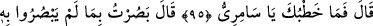
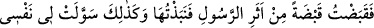
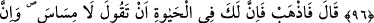
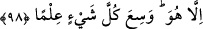

ALLAH’IN İLMİ
HER ŞEYİ KUŞATMIŞTIR
95. Mûsâ: “Ya senin zorun nedir, ey Sâmirî?” dedi.
96. O da: “Ben, onların görmediklerini gördüm. Zira, o elçinin izinden bir avuç
(toprak) alıp onu (erimiş mücevheratın içine) attım. Bunu böyle nefsim bana hoş
gösterdi.” dedi.
97. Mûsâ dedi ki: “Defol, artık hayatın boyunca sen: “Bana dokunmayın!”
diyeceksin. Ayrıca senin için, kurtulamayacağın bir ceza günü var. Tapmakta
olduğun ilâhına da bak! Yemin ederim, biz onu yakacağız; sonra da parça parça
edip denize savuracağız!
98. Sizin ilâhınız, yalnızca, kendisinden başka ilâh olmayan Allah’tır. O’nun ilmi
her şeyi kuşatmıştır.”
Sanki burada: “Mûsâ (a.s.), kavminden puta tapmayanların ve Hz. Hârun’un
kendisinden özür dilediklerini, fitnenin esas kaynağının Sâmirî olduğu belli olduktan
sonra ne yaptı?” diye bir soru sorulmuş ve bu soruya şöyle cevap verilmiştir: “Mûsâ:”
yaptığından ötürü Sâmirî’yi azarlayarak “Ya senin zorun nedir, ey Sâmirî?” dedi.”
Burada Sâmirî’nin başını çektiği fitnenin büyüklüğüne işâret vardır. Yâni ey Sâmirî,
senin bunu yapmakta amacın nedir? Seni buna yönelten nedir? Ey Sâmirî, senin yaptığın
bu büyük iş nedir? Yâni ne büyük iş işledin!
Mûsâ (a.s.) Sâmirî’ye böyle hitap etti ki kendi îtirafıyla kurduğu tuzağın bâtıl
olduğunu bilsinler, ona ve yaptığı heykele verilecek cezâ ona bağlananlara ve ondan
sonra gelecek ümmetlere ibret olsun.
Büyüklerden birisi şöyle demiştir: “Ya senin zorun nedir, ey Sâmirî?” sözünde kasd
edilen şudur: Seni böyle yapmaya, kavmin ziynetlerini toplayıp bunlardan özellikle bir
buzağı heykeli yapmaya sevk eden nedir? Onların ellerindeki ziynetleri toplayıp
kalplerini buna (buzağıya) meyl ettirdin!.. Nitekim Îsâ (a.s.) bir gün İsrâiloğulları’na
şöyle nasihat etmişti: “Ey İsrâiloğulları, insanın malı neredeyse, gönlü o tarafa